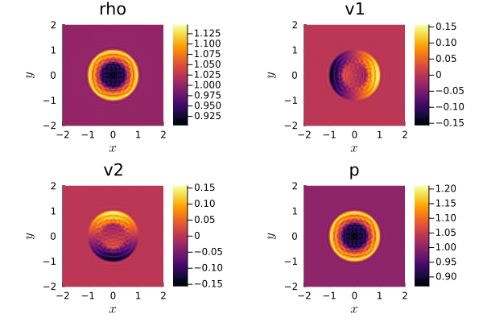
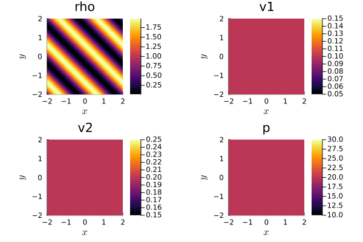

1.1: First steps in Trixi.jl: Getting started


Trixi.jl is a numerical simulation framework for conservation laws and is written in the Julia programming language. This tutorial is intended for beginners in Julia and Trixi.jl. After reading it, you will know how to install Julia and Trixi.jl on your computer, and you will be able to download setup files from our GitHub repository, modify them, and run simulations.
The contents of this tutorial:
- Julia installation
- Trixi.jl installation
- Running a simulation
- Getting an existing setup file
- Modifying an existing setup
Julia installation
Trixi.jl is compatible with the latest stable release of Julia. Additional details regarding Julia support can be found in the README.md file. After installation, the current default Julia version can be managed through the command line tool juliaup. You may follow our concise installation guidelines for Windows, Linux, and MacOS provided below. In the event of any issues during the installation process, please consult the official Julia installation instruction.
Windows
- Open a terminal by pressing
Win+rand enteringcmdin the opened window. - To install Julia, execute the following command in the terminal:
Note: For this installation an MS Store account is necessary to proceed.winget install julia -s msstore - Verify the successful installation of Julia by executing the following command in the terminal:
To exit Julia, executejuliaexit()or pressCtrl+d.
Linux and MacOS
- To install Julia, run the following command in a terminal:
Follow the instructions displayed in the terminal during the installation process.curl -fsSL https://install.julialang.org | sh - If an error occurs during the execution of the previous command, you may need to install
curl. On Ubuntu-type systems, you can use the following command:
After installingsudo apt install curlcurl, repeat the first step once more to proceed with Julia installation. - Verify the successful installation of Julia by executing the following command in the terminal:
To exit Julia, executejuliaexit()or pressCtrl+d.
Trixi.jl installation
Trixi.jl and its related tools are registered Julia packages, thus their installation happens inside Julia. For a smooth workflow experience with Trixi.jl, you need to install Trixi.jl, Plots.jl, and sub-packages of OrdinaryDiffEq.jl.
- Open a terminal and start Julia.
- Execute the following commands to install all mentioned packages. Please note that the installation process involves downloading and precompiling the source code, which may take some time depending on your machine.
import PkgPkg.add(["OrdinaryDiffEqLowStorageRK", "OrdinaryDiffEqSSPRK", "Plots", "Trixi"]) - On Windows, the firewall may request permission to install packages.
Besides Trixi.jl you have now installed additional packages: sub-packages of OrdinaryDiffEq.jl provide time integration schemes used by Trixi.jl and Plots.jl can be used to directly visualize Trixi.jl results from the Julia REPL.
Usage
Running a simulation
To get you started, Trixi.jl has a large set of example setups, that can be taken as a basis for your future investigations. In Trixi.jl, we call these setup files "elixirs", since they contain Julia code that takes parts of Trixi.jl and combines them into something new.
Any of the examples can be executed using the trixi_include function. trixi_include(...) expects a single string argument with a path to a file containing Julia code. For convenience, the examples_dir function returns a path to the examples folder, which has been locally downloaded while installing Trixi.jl. joinpath(...) can be used to join path components into a full path.
Let's execute a short two-dimensional problem setup. It approximates the solution of the compressible Euler equations in 2D for an ideal gas (CompressibleEulerEquations2D) with a weak blast wave as the initial condition and periodic boundary conditions.
The compressible Euler equations in two spatial dimensions are given by
\[\frac{\partial}{\partial t} \begin{pmatrix} \rho \\ \rho v_1 \\ \rho v_2 \\ \rho e_{\text{total}} \end{pmatrix} + \frac{\partial}{\partial x} \begin{pmatrix} \rho v_1 \\ \rho v_1^2 + p \\ \rho v_1 v_2 \\ (\rho e_{\text{total}} + p) v_1 \end{pmatrix} + \frac{\partial}{\partial y} \begin{pmatrix} \rho v_2 \\ \rho v_1 v_2 \\ \rho v_2^2 + p \\ (\rho e_{\text{total}} + p) v_2 \end{pmatrix} = \begin{pmatrix} 0 \\ 0 \\ 0 \\ 0 \end{pmatrix},\]
for an ideal gas with the specific heat ratio $\gamma$. Here, $\rho$ is the density, $v_1$ and $v_2$ are the velocities, $e_{\text{total}}$ is the specific total energy, and
\[p = (\gamma - 1) \left( \rho e_{\text{total}} - \frac{1}{2} \rho (v_1^2 + v_2^2) \right)\]
is the pressure.
The initial_condition_weak_blast_wave is specified in compressible_euler_2d.jl
Start Julia in a terminal and execute the following code:
using Trixi, OrdinaryDiffEqtrixi_include(joinpath(examples_dir(), "tree_2d_dgsem", "elixir_euler_ec.jl"))[ Info: You just called `trixi_include`. Julia may now compile the code, please be patient.
████████╗██████╗ ██╗██╗ ██╗██╗
╚══██╔══╝██╔══██╗██║╚██╗██╔╝██║
██║ ██████╔╝██║ ╚███╔╝ ██║
██║ ██╔══██╗██║ ██╔██╗ ██║
██║ ██║ ██║██║██╔╝ ██╗██║
╚═╝ ╚═╝ ╚═╝╚═╝╚═╝ ╚═╝╚═╝
┌──────────────────────────────────────────────────────────────────────────────────────────────────┐
│ SemidiscretizationHyperbolic │
│ ════════════════════════════ │
│ #spatial dimensions: ……………………………………… 2 │
│ mesh: ……………………………………………………………………………… TreeMesh{2, Trixi.SerialTree{2, Float64}} with length 1365 │
│ equations: ………………………………………………………………… CompressibleEulerEquations2D │
│ initial condition: …………………………………………… initial_condition_weak_blast_wave │
│ boundary conditions: ……………………………………… Trixi.BoundaryConditionPeriodic │
│ source terms: ………………………………………………………… nothing │
│ solver: ………………………………………………………………………… DG │
│ total #DOFs per field: ………………………………… 16384 │
└──────────────────────────────────────────────────────────────────────────────────────────────────┘
┌──────────────────────────────────────────────────────────────────────────────────────────────────┐
│ TreeMesh{2, Trixi.SerialTree{2, Float64}} │
│ ═════════════════════════════════════════ │
│ center: ………………………………………………………………………… [0.0, 0.0] │
│ length: ………………………………………………………………………… 4.0 │
│ periodicity: …………………………………………………………… (true, true) │
│ current #cells: …………………………………………………… 1365 │
│ #leaf-cells: …………………………………………………………… 1024 │
│ current capacity: ……………………………………………… 1365 │
└──────────────────────────────────────────────────────────────────────────────────────────────────┘
┌──────────────────────────────────────────────────────────────────────────────────────────────────┐
│ CompressibleEulerEquations2D │
│ ════════════════════════════ │
│ #variables: ……………………………………………………………… 4 │
│ │ variable 1: ………………………………………………………… rho │
│ │ variable 2: ………………………………………………………… rho_v1 │
│ │ variable 3: ………………………………………………………… rho_v2 │
│ │ variable 4: ………………………………………………………… rho_e_total │
└──────────────────────────────────────────────────────────────────────────────────────────────────┘
┌──────────────────────────────────────────────────────────────────────────────────────────────────┐
│ DG{Float64} │
│ ═══════════ │
│ basis: …………………………………………………………………………… LobattoLegendreBasis{Float64}(polydeg=3) │
│ mortar: ………………………………………………………………………… LobattoLegendreMortarL2{Float64}(polydeg=3) │
│ surface integral: ……………………………………………… SurfaceIntegralWeakForm │
│ │ surface flux: …………………………………………………… flux_ranocha │
│ volume integral: ………………………………………………… VolumeIntegralFluxDifferencing │
│ │ volume flux: ……………………………………………………… flux_ranocha │
└──────────────────────────────────────────────────────────────────────────────────────────────────┘
┌──────────────────────────────────────────────────────────────────────────────────────────────────┐
│ AnalysisCallback │
│ ════════════════ │
│ interval: …………………………………………………………………… 100 │
│ analyzer: …………………………………………………………………… LobattoLegendreAnalyzer{Float64}(polydeg=6) │
│ │ error 1: ………………………………………………………………… l2_error │
│ │ error 2: ………………………………………………………………… linf_error │
│ │ integral 1: ………………………………………………………… entropy_timederivative │
│ save analysis to file: ………………………………… no │
└──────────────────────────────────────────────────────────────────────────────────────────────────┘
┌──────────────────────────────────────────────────────────────────────────────────────────────────┐
│ AliveCallback │
│ ═════════════ │
│ interval: …………………………………………………………………… 10 │
└──────────────────────────────────────────────────────────────────────────────────────────────────┘
┌──────────────────────────────────────────────────────────────────────────────────────────────────┐
│ SaveSolutionCallback │
│ ════════════════════ │
│ interval: …………………………………………………………………… 100 │
│ solution variables: ………………………………………… cons2prim │
│ save initial solution: ………………………………… yes │
│ save final solution: ……………………………………… yes │
│ output directory: ……………………………………………… /home/runner/work/Trixi.jl/Tr…ild/tutorials/first_steps/out │
└──────────────────────────────────────────────────────────────────────────────────────────────────┘
┌──────────────────────────────────────────────────────────────────────────────────────────────────┐
│ StepsizeCallback │
│ ════════════════ │
│ CFL Hyperbolic: …………………………………………………… Returns{Float64}(1.0) │
│ CFL Parabolic: ……………………………………………………… Returns{Float64}(0.0) │
│ Interval: …………………………………………………………………… 1 │
└──────────────────────────────────────────────────────────────────────────────────────────────────┘
┌──────────────────────────────────────────────────────────────────────────────────────────────────┐
│ Time integration │
│ ════════════════ │
│ Start time: ……………………………………………………………… 0.0 │
│ Final time: ……………………………………………………………… 0.4 │
│ time integrator: ………………………………………………… CarpenterKennedy2N54 │
│ adaptive: …………………………………………………………………… false │
└──────────────────────────────────────────────────────────────────────────────────────────────────┘
┌──────────────────────────────────────────────────────────────────────────────────────────────────┐
│ Environment information │
│ ═══════════════════════ │
│ #threads: …………………………………………………………………… 1 │
│ threading backend: …………………………………………… polyester │
└──────────────────────────────────────────────────────────────────────────────────────────────────┘
────────────────────────────────────────────────────────────────────────────────────────────────────
Simulation running 'CompressibleEulerEquations2D' with DGSEM(polydeg=3)
────────────────────────────────────────────────────────────────────────────────────────────────────
#timesteps: 0 run time: 9.02000000e-07 s
Δt: 1.00000000e+00 └── GC time: 0.00000000e+00 s (0.000%)
sim. time: 0.00000000e+00 (0.000%) time/DOF/RHS: NaN s
PID: Inf s
#DOFs per field: 16384 alloc'd memory: 1726.004 MiB
#elements: 1024 device memory: 0.000 MiB
Variable: rho rho_v1 rho_v2 rho_e_total
L2 error: 6.25621384e-03 5.88786362e-03 5.81457821e-03 2.34267393e-02
Linf error: 1.06470791e-01 2.46283676e-01 1.37585923e-01 3.98685775e-01
∑∂S/∂U ⋅ Uₜ : -6.42679631e-18
────────────────────────────────────────────────────────────────────────────────────────────────────
#timesteps: 10 │ Δt: 1.0797e-02 │ sim. time: 1.0745e-01 (26.862%) │ run time: 1.2337e-01 s
#timesteps: 20 │ Δt: 1.1033e-02 │ sim. time: 2.1692e-01 (54.229%) │ run time: 1.9710e-01 s
#timesteps: 30 │ Δt: 1.1481e-02 │ sim. time: 3.3075e-01 (82.688%) │ run time: 2.7245e-01 s
────────────────────────────────────────────────────────────────────────────────────────────────────
Simulation running 'CompressibleEulerEquations2D' with DGSEM(polydeg=3)
────────────────────────────────────────────────────────────────────────────────────────────────────
#timesteps: 37 run time: 3.30447802e-01 s
Δt: 4.74704430e-04 └── GC time: 0.00000000e+00 s (0.000%)
sim. time: 4.00000000e-01 (100.000%) time/DOF/RHS: 8.57292108e-08 s
PID: 1.06920460e-07 s
#DOFs per field: 16384 alloc'd memory: 1733.032 MiB
#elements: 1024 device memory: 0.000 MiB
Variable: rho rho_v1 rho_v2 rho_e_total
L2 error: 6.17517156e-02 5.01822362e-02 5.01898945e-02 2.25871560e-01
Linf error: 2.93475829e-01 3.10812492e-01 3.10738039e-01 1.05403580e+00
∑∂S/∂U ⋅ Uₜ : 1.39986675e-18
────────────────────────────────────────────────────────────────────────────────────────────────────
────────────────────────────────────────────────────────────────────────────────────────────────────
Trixi.jl simulation finished. Final time: 0.4 Time steps: 37 (accepted), 37 (total)
────────────────────────────────────────────────────────────────────────────────────────────────────
Trixi.jl
──────────────────────────────────────────────────────────────────────────────────────
Time Allocations
────────────────────── ────────────────────────
Tot / % measured: 354ms / 78.4% 14.6MiB / 85.2%
──────────────────────────────── ────────────────────── ────────────────────────
Section ncalls time %tot avg alloc %tot avg
──────────────────────────────────────────────────────────────────────────────────────
rhs_hyperbolic! 186 261ms 94.1% 1.40ms 4.05KiB 0.0% 22.3B
├─ volume integral 186 196ms 70.5% 1.05ms ∅ ∅ ∅
├─ interface flux 186 35.6ms 12.8% 192μs ∅ ∅ ∅
├─ prolong2interfaces 186 14.1ms 5.1% 75.6μs ∅ ∅ ∅
├─ surface integral 186 11.7ms 4.2% 62.9μs ∅ ∅ ∅
├─ Jacobian 186 2.03ms 0.7% 10.9μs ∅ ∅ ∅
├─ reset ∂u/∂t 186 1.86ms 0.7% 10.0μs ∅ ∅ ∅
├─ ~rhs_hyperbolic!~ 186 307μs 0.1% 1.65μs 4.05KiB 0.0% 22.3B
├─ prolong2mortars 186 12.8μs 0.0% 69.0ns ∅ ∅ ∅
├─ prolong2boundaries 186 11.0μs 0.0% 59.2ns ∅ ∅ ∅
├─ mortar flux 186 7.63μs 0.0% 41.0ns ∅ ∅ ∅
├─ source terms 186 6.32μs 0.0% 34.0ns ∅ ∅ ∅
└─ boundary flux 186 5.45μs 0.0% 29.3ns ∅ ∅ ∅
analyze solution 2 9.37ms 3.4% 4.68ms 9.35MiB 75.1% 4.67MiB
calculate dt 38 3.86ms 1.4% 102μs ∅ ∅ ∅
I/O 3 3.15ms 1.1% 1.05ms 3.10MiB 24.9% 1.03MiB
├─ save solution 2 2.34ms 0.8% 1.17ms 3.02MiB 24.3% 1.51MiB
├─ ~I/O~ 3 806μs 0.3% 269μs 81.6KiB 0.6% 27.2KiB
├─ get element variables 2 682ns 0.0% 341ns ∅ ∅ ∅
├─ get node variables 2 421ns 0.0% 210ns ∅ ∅ ∅
└─ save mesh 2 131ns 0.0% 65.5ns ∅ ∅ ∅
──────────────────────────────────────────────────────────────────────────────────────The output contains a recap of the setup and various information about the course of the simulation. For instance, the solution was approximated over the TreeMesh with 1024 effective cells using the CarpenterKennedy2N54 ODE solver. Further details about the ODE solver can be found in the documentation of OrdinaryDiffEq.jl
To analyze the result of the computation, we can use the Plots.jl package and the function plot(...), which creates a graphical representation of the solution. sol is a variable defined in the executed example and it contains the solution after the simulation finishes. sol.u holds the vector of values at each saved timestep, while sol.t holds the corresponding times for each saved timestep. In this instance, only two timesteps were saved: the initial and final ones. The plot depicts the distribution of the weak blast wave at the final moment of time, showing the density, velocities, and pressure of the ideal gas across a 2D domain.
using Plotsplot(sol)
Getting an existing setup file
To obtain a list of all Trixi.jl elixirs execute get_examples. It returns the paths to all example setups.
get_examples()588-element Vector{String}:
"/home/runner/work/Trixi.jl/Trix" ⋯ 31 bytes ⋯ "_advection_cgsbp_nonperiodic.jl"
"/home/runner/work/Trixi.jl/Trix" ⋯ 45 bytes ⋯ "fusion_gradient_source_terms.jl"
"/home/runner/work/Trixi.jl/Trix" ⋯ 27 bytes ⋯ "ixir_advection_diffusion_sbp.jl"
"/home/runner/work/Trixi.jl/Trix" ⋯ 23 bytes ⋯ "d/elixir_advection_gauss_sbp.jl"
"/home/runner/work/Trixi.jl/Trix" ⋯ 33 bytes ⋯ "urgers_gauss_shock_capturing.jl"
"/home/runner/work/Trixi.jl/Trix" ⋯ 24 bytes ⋯ "/elixir_euler_cgsbp_periodic.jl"
"/home/runner/work/Trixi.jl/Trix" ⋯ 24 bytes ⋯ "/elixir_euler_fdsbp_periodic.jl"
"/home/runner/work/Trixi.jl/Trix" ⋯ 19 bytes ⋯ "ti_1d/elixir_euler_flux_diff.jl"
"/home/runner/work/Trixi.jl/Trix" ⋯ 22 bytes ⋯ "1d/elixir_euler_modified_sod.jl"
"/home/runner/work/Trixi.jl/Trix" ⋯ 18 bytes ⋯ "lti_1d/elixir_euler_quasi_1d.jl"
⋮
"/home/runner/work/Trixi.jl/Trix" ⋯ 21 bytes ⋯ "tured_2d_dgsem/elixir_mhd_ec.jl"
"/home/runner/work/Trixi.jl/Trix" ⋯ 24 bytes ⋯ "ed_2d_dgsem/elixir_mhd_onion.jl"
"/home/runner/work/Trixi.jl/Trix" ⋯ 30 bytes ⋯ "fdsbp/elixir_advection_basic.jl"
"/home/runner/work/Trixi.jl/Trix" ⋯ 23 bytes ⋯ "red_2d_fdsbp/elixir_euler_ec.jl"
"/home/runner/work/Trixi.jl/Trix" ⋯ 32 bytes ⋯ "sbp/elixir_euler_free_stream.jl"
"/home/runner/work/Trixi.jl/Trix" ⋯ 39 bytes ⋯ "xir_euler_free_stream_upwind.jl"
"/home/runner/work/Trixi.jl/Trix" ⋯ 47 bytes ⋯ "r_free_stream_upwind_float32.jl"
"/home/runner/work/Trixi.jl/Trix" ⋯ 33 bytes ⋯ "bp/elixir_euler_source_terms.jl"
"/home/runner/work/Trixi.jl/Trix" ⋯ 40 bytes ⋯ "ir_euler_source_terms_upwind.jl"Editing an existing elixir is the best way to start your first own investigation using Trixi.jl.
To edit an existing elixir, you first have to find a suitable one and then copy it to a local folder. Let's have a look at how to download the elixir_euler_ec.jl elixir used in the previous section from the Trixi.jl GitHub repository.
- All examples are located inside the
examplesfolder. - Navigate to the file
elixir_euler_ec.jl. - Right-click the
Rawbutton on the right side of the webpage and chooseSave as...(orSave Link As...). - Choose a folder and save the file.
Modifying an existing setup
As an example, we will change the initial condition for calculations that occur in elixir_euler_ec.jl. Initial conditions for CompressibleEulerEquations2D consist of initial values for $\rho$, $\rho v_1$, $\rho v_2$ and $\rho e_{\text{total}}$. One of the common initial conditions for the compressible Euler equations is a simple density wave. Let's implement it.
- Open the downloaded file
elixir_euler_ec.jlwith a text editor. - Go to the line with the following code:
Here,initial_condition = initial_condition_weak_blast_waveinitial_condition_weak_blast_waveis used as the initial condition. - Comment out the line using the
#symbol:# initial_condition = initial_condition_weak_blast_wave - Now you can create your own initial conditions. Add the following code after the commented line:
function initial_condition_density_waves(x, t, equations::CompressibleEulerEquations2D) v1 = 0.1 # velocity along x-axis v2 = 0.2 # velocity along y-axis rho = 1.0 + 0.98 * sinpi(sum(x) - t * (v1 + v2)) # density wave profile p = 20 # pressure rho_e_total = p / (equations.gamma - 1) + 1 / 2 * rho * (v1^2 + v2^2) return SVector(rho, rho * v1, rho * v2, rho_e_total)endinitial_condition = initial_condition_density_waves- Execute the following code one more time, but instead of
path/to/filepaste the path to theelixir_euler_ec.jlfile that you just edited.using Trixitrixi_include(path/to/file);using Plotsplot(sol)
Then you will obtain a new solution from running the simulation with a different initial condition.

To get exactly the same picture execute the following.
pd = PlotData2D(sol)p1 = plot(pd["rho"])p2 = plot(pd["v1"], clim=(0.05, 0.15))p3 = plot(pd["v2"], clim=(0.15, 0.25))p4 = plot(pd["p"], clim=(10, 30))plot(p1, p2, p3, p4)Feel free to make further changes to the initial condition to observe different solutions.
Now you are able to download, modify and execute simulation setups for Trixi.jl. To explore further details on setting up a new simulation with Trixi.jl, refer to the second part of the introduction titled Create your first setup.
This page was generated using Literate.jl.